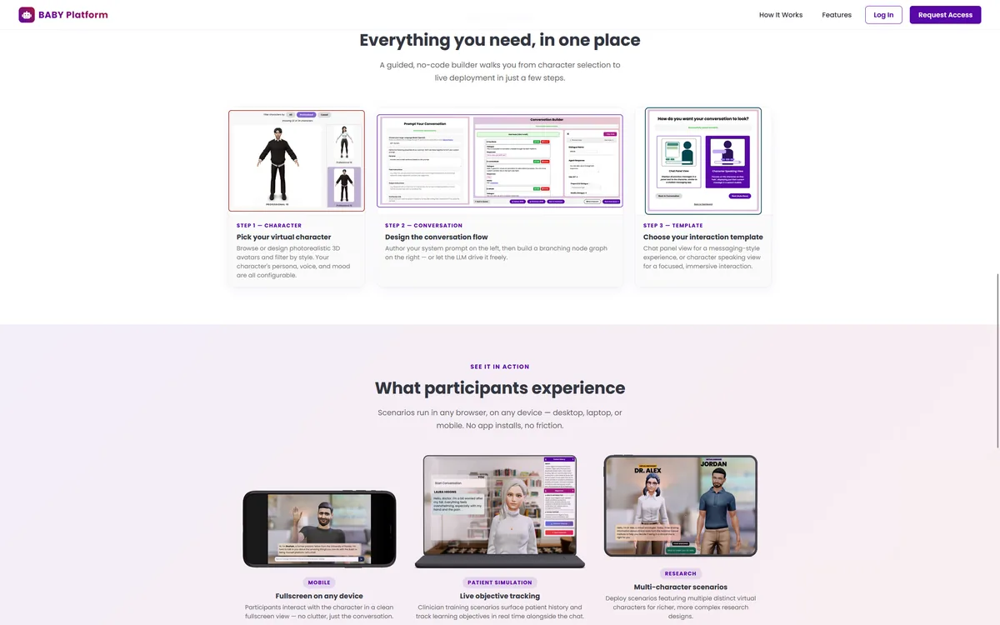

Build-A-Being Yourself
A web-based conversational AI platform for healthcare research
Build-A-Being Yourself (BABY) lets domain experts rapidly deploy embodied conversational interventions at scale, with no programming required. It coordinates agentic workflows across dialogue planning, strategy selection, and LLM-driven response generation. The platform has been used across NIH-funded studies in mental health, cancer clinical trial enrollment, and patient simulation for university curricula.
Built with Node.js, React, Express, AWS, OpenAI, LLMs, RAG, Python, MongoDB, REST APIs